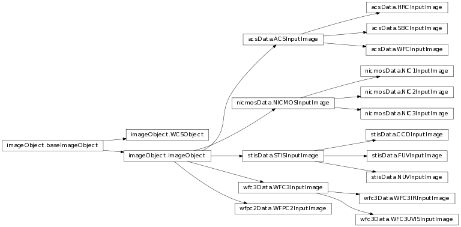

Primary User Interface: AstroDrizzle()
Base ImageObject Classes
Enter search terms or a module, class or function name.
This class and related sub-classes manage all the instrument-specific images for processing by AstroDrizzle.
